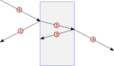
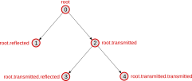
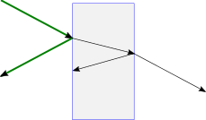
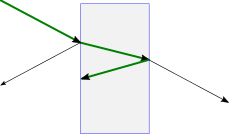
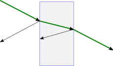
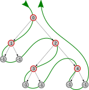

cst.asymptotic package¶
Collection of tools related to the Asymptotic solver.
Modules¶
cst.asymptotic.raydata¶
Collection of methods to read and manipulate ray data created by the Asymptotic solver.
Ray data is stored in an HDF5 file. A viewer for HDF5 files can be obtained on that website.
To create ray data in the Asymptotic solver, you’ll need to activate ray export (Solver dialog -> Settings… -> Ray storage -> Ray export).
The module provided here takes care of converting the data in the file into Python data structures.
The documentation given here should also be sufficient to understand the file format and implement a reader in another programming language.
Note
To use this module you will need to install the modules h5py (tested version: 3.6.0) and numpy (tested version: 1.21.4) in your Python environment.
- read(filename)¶
Read HDF5-file with ray data.
- Returns:
Instance of
RayData
- class RayData¶
Structure for storing ray data.
- Variables:
version – Version of the data format.
sources – List of ray path collections, each one represented by a
RaySource.
- class RaySource¶
Represents a source of rays.
- Variables:
category – Type of source
name – Identifier for this source
frequencies – List of frequencies defining the sampling for frequency dependent quantities (electric fields, in particular) within this
RaySource.trees – List of ray trees stored for this source. Each element is a
RaySegmentrepresenting the root-node of a ray tree.
- class RayTree(data, parent=None)¶
Binary tree for representing a ray tree.
A ray tree consists of several ray segments. Each instance of this class represents a segment of the entire ray tree, with reflected and transmitted segments branching from it. In effect, the entire ray tree can be reached from its root segment. This class provides routines to iterate over all segments or all possible paths.
- Example:
Scenario: Ray segments for a single ray impinging on a dielectric slab, maximum number of intersections set to 2:

In a graph-theoretical sense each segment represents a node in a binary tree. The corresponding
RayTree-graph for this scenario is illustrated in the following image; also indicated is the code to reach the segments fromroot:
- Variables:
data – Data stored for this segment.
reflected – Reflected segment branching from this segment;
Noneif absent.transmitted – Transmitted segment branching from this segment;
Noneif absent.parent – Parent segment of this segment;
Noneif this is the root segment.
- is_leaf()¶
Return True if segment has no child segments.
- segments()¶
Iterate over binary tree depth-first, yield segments pre-order.
The
reflectedsegments are processed beforetransmittedsegments.
- paths()¶
Iterate over all possible ray paths, yield lists of segments.
Every possible sequence of segments connecting the root-segment with a leaf segment is yielded. The sequences are sorted from root segment (first) to leaf segment (last).
For the example from above, the following 3 ray paths are possible (highlighted in green):



{kind=link}
{kind=link}
{kind=link}
{kind=link}
{kind=link}
- class Provenance(value, names=<not given>, *values, module=None, qualname=None, type=None, start=1, boundary=None)¶
Origin of the RaySegment.
Possible values: 0 (Incident); 1 (Reflected); 2 (Transmitted).
- class Termination(value, names=<not given>, *values, module=None, qualname=None, type=None, start=1, boundary=None)¶
Termination of RaySegment.
0 (
No): Not terminated, ray path continues; 1 (Exitray): Ray has arrived at bounding box or at its final destination (e.g. receiver source); 2 (Deadend): Solver reached maximum number of intersections for this path.
- class RaySegment(data, parent=None)¶
Interface to
RayTreeand to data stored for each ray segment.- provenance()¶
Provenance of the segment.
- Returns:
Value as specified in
Provenance
- termination()¶
Termination behavior of the segment.
- Returns:
Value as specified in
Termination
- hitorder()¶
Number of intersections before this segment.
- epsilon()¶
Relative electric permittivity in the background medium.
Assumed to be constant over frequency.
- mue()¶
Relative magnetic permeability in the background medium.
Assumed to be constant over frequency.
- area1()¶
Ray tube cross section area at start point of segment.
- area2()¶
Ray tube cross section area at end point of segment.
- position1()¶
Position at start point of segment.
- position2()¶
Position at end point of segment.
- normal1()¶
Surface normal of intersected geometry at start point of segment.
- normal2()¶
Surface normal of intersected geometry at end point of segment.
- efield1()¶
Complex electric field vectors over frequency at start point of segment.
- efield2()¶
Complex electric field vectors over frequency at end point of segment.
- areas()¶
Ray tube cross section areas at start and end point of segment.
- positions()¶
Positions at start and end point of segment.
- normals()¶
Surface normals of intersected geometry at start and end point of segment.
- efields()¶
Complex electric field vectors over frequency at start and end point of segment.
- length()¶
Length of segment.
- direction()¶
Normalized direction of ray.
- compute_powerflows(segment)¶
Compute powerflow \(P\) through the end faces of a
RaySegmentaccording to:\(P = \frac{A |\vec{E}|^2 |\hat{n}\cdot\hat{s}|}{Z_0 \sqrt{\mu_{\text{rel}} \epsilon_{\text{rel}}}}\)
where:
\(A\): Area of ray tube cross section
\(\vec{E}\): Complex electric field vector
\(\hat{n}\): Normal vector of ray tube cross section surface
\(\hat{s}\): Ray direction
\(Z_0\): Impedance of free space
\(\mu_{\text{rel}}\): Relative magnetic permeability
\(\epsilon_{\text{rel}}\): Relative electric permittivity
- Returns:
Tuple of powerflow values at start and end point of ray segment
Data layout of ray storage in HDF5-files¶
A single HDF5-file can contain ray data for multiple sources. For each source, the ray data is organized in 3 datasets:
The dataset
segmentscontains the data associated to each ray segment, like e.g. hitorder, positions, or field values.The dataset
frequenciescontains the frequency list for frequency dependent quantities as e.g. field values.The dataset
hierarchydescribes the connection of the ray segments to ray trees. The indices correspond to the position of a ray segment in the datasetsegments. The layout of the indices in the list is defined by traversing a binary tree in depth-first search order. Index values of -1 represent non-existentreflectedortransmittedchild segments. If bothreflectedandtransmitteddo not exist, the segment is a leaf in the ray tree. This is the case if the ray has left the ray tracing scene or if the maximum number of intersections has been reached in the solver.The following sketch illustrates the connection between the indices and the binary
RayTree, with its nodes represented by red circles. The green line defines the order in which the indices are layed-out in thehierachy-dataset:
{kind=link}
Example Code¶
The following example script can be found at
<PATH_TO_CST_AMD64>/python_cst_libraries/cst/asymptotic/examples/raydata_example.py.
It illustrates some basic concepts for working with the raydata-module. The
script will show some statistics of the rays in an HDF5-raydata file and plot a
subset of the ray paths.
The script can be called without any arguments. It will then read an example file shipped with the installation.
Alternatively you can specify as 1st argument an HDF5-file to be read and optionally as 2nd argument a sampling factor for plotting only a subset of the rays. Example to plot every 10th ray from a given HDF5 file:
python raydata_example.py path/to/raydata.h5 10
Please see the comments in the script for further details.
#!/usr/bin/env python3
import sys
import os
import matplotlib as mpl
import matplotlib.pyplot as plt
import numpy as np
from cst.asymptotic import raydata # make sure you've set your PYTHONPATH
def main():
"""Example routine to analyze ray data in HDF5 file."""
# Define file to read
# Use commandline argument, if specified
if len(sys.argv) > 1:
filePath = sys.argv[1]
else:
dirname = os.path.join(os.path.dirname(__file__))
filePath = os.path.join(dirname, "data", "raystorage-all-0.h5")
# Plot only some raypaths to keep the plot clean
# Use commandline argument, if specified
if len(sys.argv) > 2:
everynth = int(sys.argv[2])
else:
everynth = 1
# Read raydata file
print("Reading raydata file... ")
rd = raydata.read(filePath)
print(f"Number of sources in file: {len(rd.sources)}")
# Operate on first source
sourceID = 0
source = rd.sources[sourceID]
print(f"Showing data for source {source.name}")
print(f"Total number of rays: {len(source.trees)}")
# Get average number of segments in trees
nsegments = np.average([len(list(tree.segments()))
for tree in source.trees])
print(f"Average number of segments: {nsegments:.1f}")
# Get maximum hitorder for color normalisation
maxhitorder = max(max(s.hitorder() for s in tree.segments())
for tree in source.trees)
print(f"Maximum hitorder: {maxhitorder}")
# Count segments of any hitorder
hitorders = np.zeros(maxhitorder + 1)
for tree in source.trees:
for s in tree.segments():
hitorders[s.hitorder()] += 1
for order in range(maxhitorder + 1):
print(f"Segments with hit order {order}: {hitorders[order]:.0f}")
# Compute average length over all possible ray paths
avg_pathlength = np.average([
np.average([sum(s.length() for s in path)
for path in tree.paths()])
for tree in source.trees])
print(f"Average pathlength: {avg_pathlength:.2f}m")
# Initialize plotting
fig = plt.figure()
ax = fig.add_subplot(111, projection='3d')
norm = mpl.colors.Normalize(vmin=0, vmax=maxhitorder)
cmap = mpl.cm.plasma
mapper = mpl.cm.ScalarMappable(norm=norm, cmap=cmap)
plottrees = source.trees[::everynth]
# Plot initial hits
pos1 = np.array([tree.position2() for tree in plottrees])
ax.scatter3D(*pos1.T, depthshade=False, marker='.', color=[1, 0, 0, 0.8])
# Plot raypath segments; color by hitorder
for tree in plottrees:
for path in tree.paths():
# only show rays with exit path
if not any(s.termination() == raydata.Termination.Exitray
for s in path):
continue
for s in path:
ax.plot3D(*s.positions().T, color=mapper.to_rgba(s.hitorder()))
# Plot a legend
patches = [mpl.patches.Patch(color=mapper.to_rgba(
hitorder), label=hitorder) for hitorder in range(maxhitorder + 1)]
ax.legend(title="Hitorder", handles=patches)
plt.show()
if __name__ == '__main__':
main()